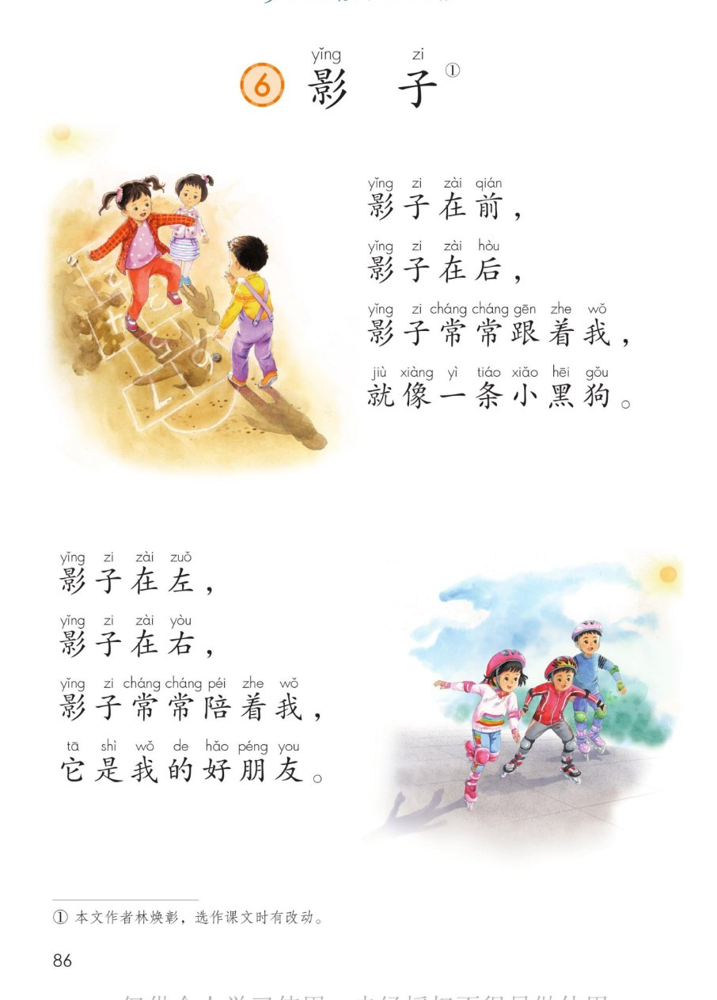
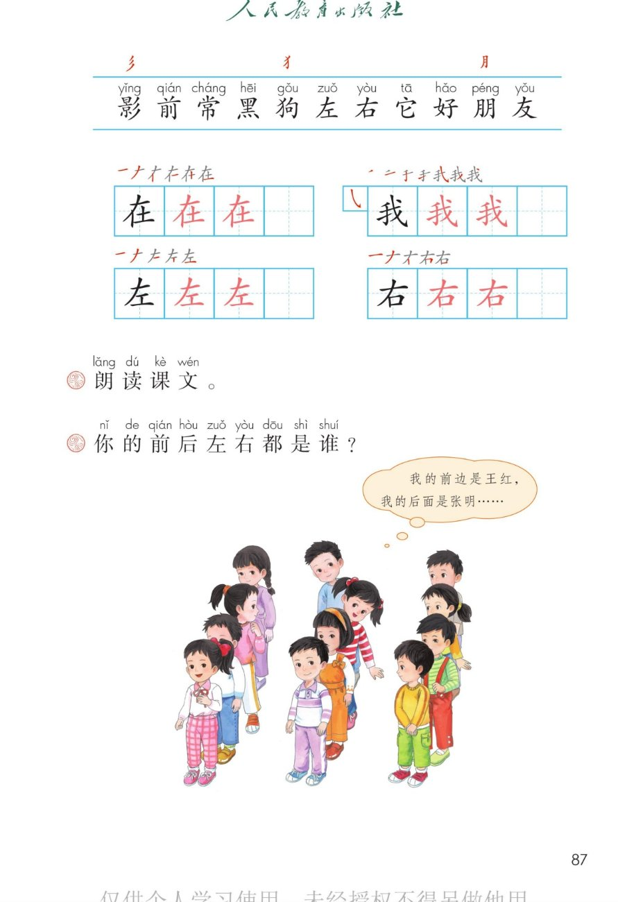

×
🔊 手机听不到声音怎么办？
① 先把手机
媒体音量调大 ，确认没开静音、没连蓝牙耳机；在微信里打开的，点右上角「⋯ → 用浏览器打开」。
② 还是没声音？到应用商店免费下载
Microsoft Edge 浏览器 （它自带朗读发声），用它打开本页面就能出声。
③ 换了 Edge 仍然没声音，说明这部手机的
硬件/系统不支持 网页朗读（多为老旧机型）；近几年买的新手机一般都能正常播放。
→ 打开声音自检
统编版 · 一年级上册 · 第七单元 · 阅读 · 课文6
⑥ 影 子
影子在前，影子在后，影子常常跟着我……
前后左右 小黑狗·好朋友 三个新偏旁 闯关 8 题
这一课学什么： 把两节小诗读得活泼一点；认识 11 个字，写好「在、我、左、右」；
弄清前、后、左、右 ，再说说「你的前后左右都是谁」。🌞
页面上每行的拼音是照课本标的，供参考，以课本和老师为准。
课本第 86 页 点一行读一行
读前小贴士： 课文分 2 小节 ，每节 4 行。第一节影子像小黑狗 跟着我，
第二节影子成了我的好朋友 。读得活泼一点，像在和影子玩游戏。🐕
🎵 全文连读
🔁 跟读模式（读完一行停一停）
🔎 影子小知识： 光被身体挡住，身后照不到光的一块就是影子，所以它是黑黑的。
太阳在前，影子在后；太阳在左，影子在右 ——影子总在光的相反方向。🌞
课本第 87 页识字条 点一张读一张
识字条 · 连起来读
影 前 常 黑 狗 左 右 它 好 朋 友 —— 识字条上方三个红字是新偏旁「彡 犭 月 」
点卡听读
课本第 87 页田字格 先看笔顺，再动笔
形近字小妙招： 左 的下面是「工 」，右 的下面是「口 」；
第一笔都是横 ，第二笔都是撇 。✍️
课本第 87 页课后题 点卡听读
课后题 · 你的前后左右都是谁？ 王红 ，我的后面是张明 ，我的左边是李小军 ，我的右边是陈丽 。
说之前先站好，想想自己面朝哪一边。🗣️
点卡听读
比一比： 第一节「跟着我 」→ 像小黑狗 （总跟在身后）；
第二节「陪着我 」→ 是好朋友 （有它作伴真开心）。两个词意思相近，越读越亲近。💛
点题目可以听题，点选项就判对错，答完自动算分
已经答 0 题，答对 0 题。
点图放大

第 86 页 · 课文两节 · 插图 · 脚注

第 87 页 · 识字条 · 三个偏旁 · 田字格 · 课后题